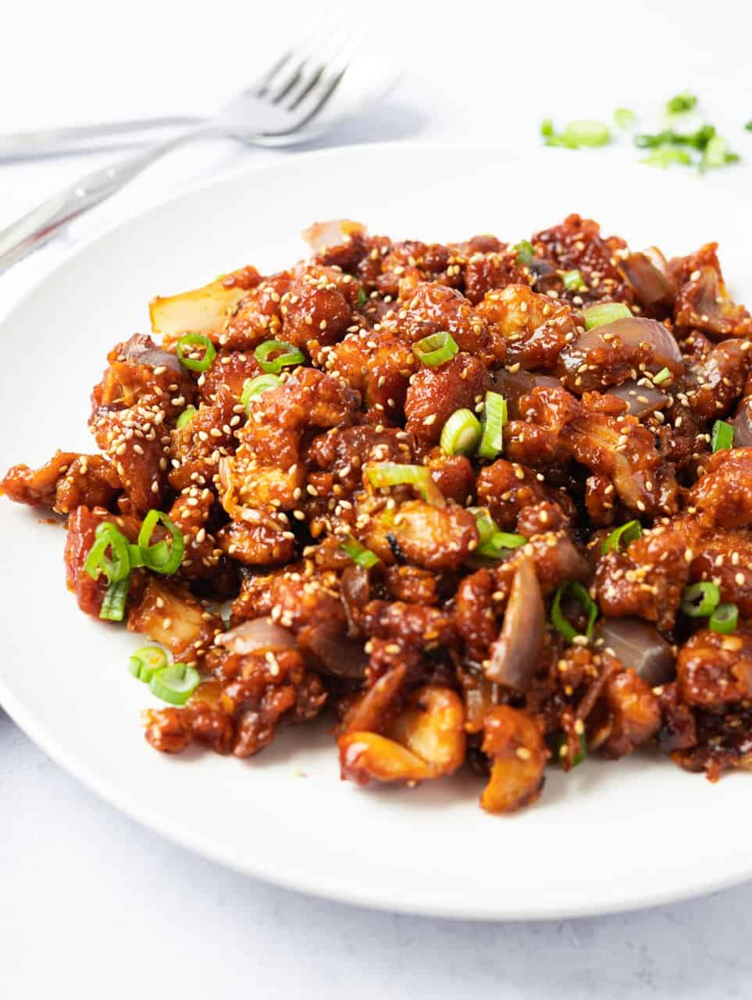

Sweet and sour gochujang chicken is a quick wok dish featuring Korean flavors. Serve over rice.
Gather all ingredients.
Stir together gochujang, soy sauce, sweet rice wine, honey, garlic, sesame oil, and ginger in a small bowl.
Heat oil over medium-high in a wok or large skillet. Add half of the chicken to the wok; cook and stir over medium-high until chicken is no longer pink, about 5 minutes.
Remove chicken from the wok. Repeat with remaining chicken. Return all cooked chicken pieces to the wok.
Stir sauce well. Add to the wok; cook and stir until sauce has thickened and is bubbly, about 3 minutes.
Top with sesame seeds and green onions. Serve immediately with rice.